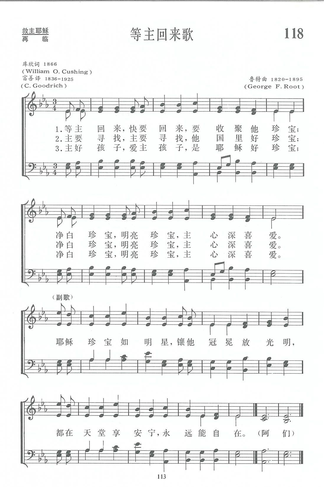
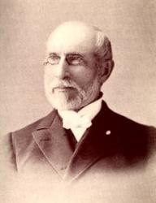

|
|
|
|
|
1 When He cometh, when He cometh Refrain: 2 He will gather, He will gather 3 Little children, little children, |
第118首《等主回來歌》 |
|
|
https://www.zanmeishige.com/tab/13791.html?songbook=1&index=118

|
||
|
|
|
|


https://youtu.be/-F_GpC7Qz8A - Joni Eareckson Tada - When He Cometh (Jewels) [Live]
https://youtu.be/8fXDd72bKUk https://youtu.be/VPkZlYcpt9k - When He Cometh | SDA Hymnal 218 | Lyric Video
https://youtu.be/ZhpgXYqUu5A
| Text: | When He Cometh |
| Author: | William O. Cushing, 1823-1902 |
| Tune: | JEWELS |
| Composer: | George F. Root, 1820-1895 |
| Short Name: | W. O. Cushing |
| Full Name: | Cushing, W. O. (William Orcutt), 1823-1903 |
| Birth Year: | 1823 |
| Death Year: | 1903 |
Rv William Orcutt Cushing USA 1823-1903.

Born at Hingham, MA, he read the Bible as a teenager and became a follower of the Orthodox Christian school of thought. At age 18 he decided to become a minister, following in his parents theology. His first pastorate was at the Christian Church, Searsburg, NY. He married Hena Proper in 1854. She was a great help to him throughout his ministry. He ministered at several NY locations over the years, including Searsburg, Auburn, Brookley, Buffalo, and Sparta. Hena died in 1870, and he returned to Searsburg, again serving as pastor there. Working diligently with the Sunday school, he was dearly beloved by young and old. Soon after, he developed a creeping paralysis that caused him to lose his voice. He retired from ministry after 27 years. He once gave all his savings ($1000) to help a blind girl receive an education. He was instrumental in the erection of the Seminary at Starkey, NY. He gave material aid to the school for the blind at Batavia. He was mindful of the suffering of others, but oblivious to his own. After retiring, he asked God to give him something to do. He discovered he had a talent for writing and kept busy doing that. He authored about 300 hymn lyrics. The last 13 years of his life he lived with Rev. and Mrs. E. E Curtis at Lisbon Center, NY, and joined with the Wesleyan Methodist Church there. He died at Searsburg, NY.
John Perry
Tune Information
| Title: | [When He cometh, when He cometh] |
| Composer: | George F. Root |
| Meter: | 8.6.8.5.7.6.7.5 |
| Incipit: | 12333 45563 3211 |
| Notes: | Spanish translation: "Cuando venga Jesucristo" by Anonymous |
| Key: | E Major |
| Copyright: | Public Domain |

第118首 等主回来歌 When He Cometh (Precious Jewels) _库欣
经文：“万军之耶和华说：‘在我所定的日子’他们必属我，特特归我’”(玛3：17)。
《等主回来》是l866年某日当库欣牧师(事略参阅第116首)读到旧约最后一卷玛拉基书第3章第17节时有感而作的。那节经文汉译为：“万军之耶和华说：在我所定的日子；他们必属我，特特归我。”英文译词则是：“万军之耶和华说：‘当我来收聚我的珍宝的日子，他们必要属我.”’库欣牧师乃从以色列人的渴望联想到主再来而写成这首“等主回来，快要回来，要收聚他珍宝”。
以后由鲁特(事略参阅第12首)谱了一首《珍宝》的调，先在美国芝加哥城出版的《红岛诗集》上发表，以后桑基收入他的《圣诗与独唱》，很快就流行到各地，感动很多人，愿意为了预备见主而珍惜今天的时光，作主的“净白珍宝，明亮珍宝”。
从前英国海兰兹地方有个信心冷淡的青年，他的牧师认为已到无法挽回的地步，谁都想不到有一天他会复兴起来，变得非常热心。牧师问他为何会有如此大的改变，他说是因为听到他的小妹妹唱“等主回来，快要回来，要收聚他珍宝”所受的感动。
《圣诗史话》①里提到这首诗时，曾述说下列一段轶事：
一次，有一位牧师乘了一只英国的海船从欧洲回家，他去参观三等客舱，见有各国不少的移民，就建议举行一个歌诗崇拜，一开始就领他们唱《等主回来》。由于歌词简单易懂，曲调轻快和谐，眨眼间这些移民就都学会了，并在全程的旅行中不知唱了多少次。及船抵埠后,移民们换乘火车，在每一节车厢里，还传出兴高采烈的歌声。
①参姜建邦：《圣诗史话》第178、281页。
https://www.xueshengshi.com/?p=6442
Words: William Orcutt Cushing (b. Dec. 31, 1823; d. Oct.
19, 1902)
Music: Jewels, by George Frederick Root (b. Aug. 30, 1820;
d. Aug. 6, 1895)
Links:
Wordwise Hymns (William
Cushing)
The Cyber
Hymnal
Note: There’s an inspiring story about a particular time when this 1856 song was a great blessing. It comes from Ira Sankey, and is found in the Cyber Hymnal Link.
William Cushing also collaborated with George Root on the gospel song Ring the Bells of Heaven. In addition, Root wrote the words and music of She Only Touched the Hem of His Garment, based on an incident recorded in Luke 8:43-48. Mr. Root was a man of strong convictions. Before he died in 1895, he requested that nothing be sung at his funeral other than the Doxology (“Praise God, from Whom All Blessings Flow”).
While I admire his zeal for the glory of God alone, I do disagree with doing that. Personally, if I should die before the Lord’s return, I want my memorial service to be filled with music. Music that is both glorifying God and that presents the message of the gospel.
This hymn was written by Pastor Cushing specifically for the children in his church’s Sunday School. However, other than the first line of CH-3, there’s no particular focus on children. This is a hymn we all can sing. The Lord Jesus called His disciples “little children” (Jn. 13:33). And the Apostle John also speaks affectionately to Christians in his first epistle as “little children,” where the context indicates he’s not referring to infants (I Jn. 2:1, 12, 13, 18, 28; 3:7, 18; 4:4; 5:21).
The text is based on a couple of Old Testament passages. One is Malachi 3:16-17, which says:
“Then those who feared the LORD spoke to one another, and the LORD listened and heard them; so a book of remembrance was written before Him for those who fear the LORD and who meditate on His name. ‘They shall be Mine,’ says the LORD of hosts, ‘on the day that I make them My jewels. And I will spare them as a man spares his own son who serves him.’”
The verses are referring to the godly remnant in Israel. In a time when God judges the wicked, He will not forget to preserve those who have been faithful to Him. They are His special treasure, cared for as one would value and protect precious jewels. In the New Testament, the Church Age saints are described similarly–as “the riches of the glory of His inheritance in the saints” (Eph. 1:18).
A second passage also seems to be reflected in Pastor Cushing’s song, especially in the refrain. It’s Daniel 12:2-3:
“Many of those who sleep in the dust of the earth shall awake, some to everlasting life, some to shame and everlasting contempt. Those who are wise shall shine like the brightness of the firmament, and those who turn many to righteousness like the stars forever and ever.”
Again, the initial application of these verses is to the nation of Israel, those who are described to Daniel as “your people” (vs. 1). There will be great rewards to come for those of that nation who demonstrate their faith in God, both by godly wisdom and service for the Lord. This is clearly a New Testament theme as well. The Lord Jesus taught, there is a resurrection of life for those who are born again, and a resurrection of condemnation for lost sinners (Jn. 5:28-29).
Though we’re not saved by our good works (Eph. 2:8-9), how we live becomes a demonstration of our faith–or lack of it (Jas. 2:26; cf. Matt. 7:20). As Church Age saints we can look forward to sharing in the glory of Christ, and being rewarded for our service for Him (Col. 3:4; Rev. 19:7-8; 22:12).
CH-1) When He cometh, when He cometh
To make up His jewels,
All His jewels, precious jewels,
His loved and His own.
Like the stars of the morning,
His brightness adorning,
They shall shine in their beauty,
Bright gems for His crown.
CH-2) He will gather, He will gather
The gems for His kingdom;
All the pure ones, all the bright ones,
His loved and His own.
Questions:
1) What is implied when the Word of God refers to adult believers as
“little children”?
2) Do you agree with what George Root did? If not, what hymns and gospel songs would you like to see used at your memorial service?
Links:
Wordwise Hymns (William
Cushing)
The Cyber
Hymnal
https://wordwisehymns.com/2013/01/25/when-he-cometh/